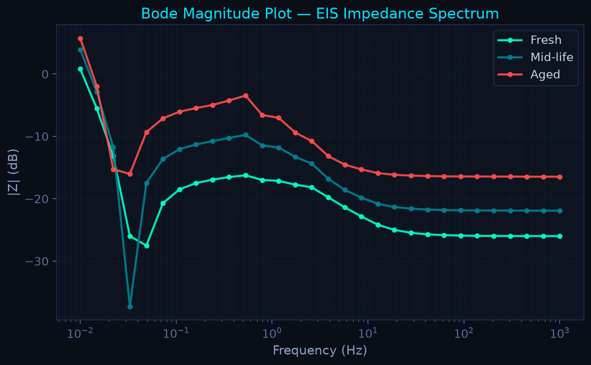
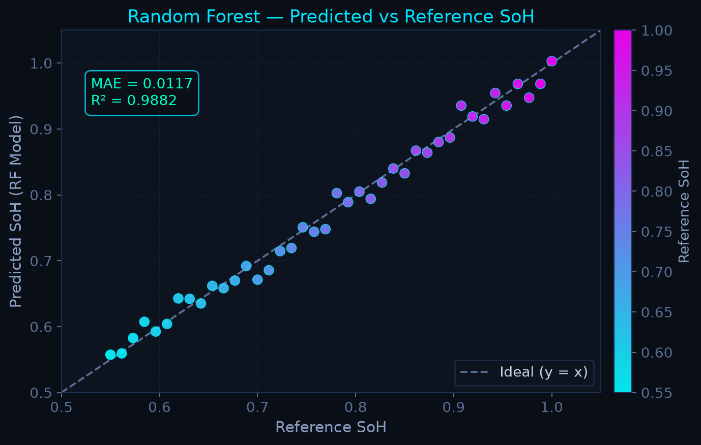

An interactive, low-cost engineering pipeline for Electrochemical Impedance Spectroscopy (EIS) and anomaly detection. 100% Non-destructive, powered by Machine Learning.
Lithium-ion cells degrade chemically in ways voltage checks alone cannot detect.
Internal shorts build up silently, risking sudden failure and thermal runaway.
EIS injects AC signals to map complex impedance across frequencies, acting like an internal MRI.
Commercial potentiostats price universities and hobbyists entirely out of battery research.
Relies on extremely smooth, high-frequency spectra (>100 kHz) to track ohmic shifts. Often requires deliberately destroying cells to simulate short circuits.
Limits extraction to 860 SPS via a low-cost ADC, extracting proxy features (R_pol, |Z|) and feeding them into an RF model. 100% non-destructive safe proxy circuits for anomaly testing.
ESP32 commands AD9833 to sweep excitation frequency across the cell; ADS1115 samples the voltage/current response for DFT-based impedance extraction.
(Drag to rotate. Z_real vs -Z_imag across Frequencies, extracting EIS curves via 860 SPS simulated hardware)

Bode Magnitude Shift over frequencies.

Random Forest accurate SoH estimation.
We do not deliberately puncture or short genuine Li-ion cells. We simulate faults using external proxy RC-circuits, completely side-stepping thermal runaway risks in a student lab environment.
This is a low-frequency demonstrator. Missing 4-wire Kelvin clips induces contact resistance errors, and 860 SPS misses the ultrafast SEI dynamics. Our ML pipeline is designed precisely to smooth over these extreme budget-induced artifacts.